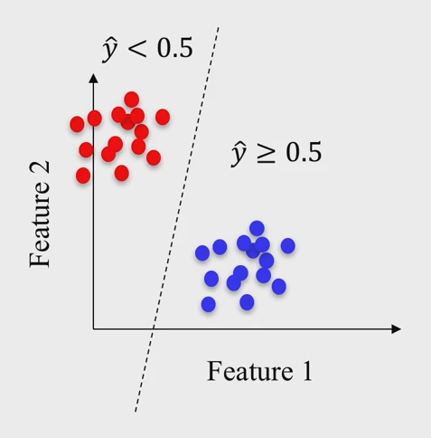

Logistic Regression
Ecole Nationale Supérieure de Cognitique

Summary
- Logistic Regression In A Nutshell
- Binary Classification
- Multiclass Classification
Logistic Regression in a nutshell
- Supervised learning algorithm.
- Used for classification problems.
- Linear model + function to transform its output into probabilities.
- Probabilities are thresholded to predict classes.
Binary classification
Uses the logistic (sigmoid) function

The logistic function
Output in $[0,1]$

Loss function
Binary Crossentropy: $$\mathcal{L}(\theta) = -\frac{1}{m}\sum_{i=1}^m \left[y^{(i)} \log(y'^{(i)}) + (1-y^{(i)}) \log(1-y'^{(i)})\right]$$
(Always convex)
Training
- No equivalent of the Normal Equation.
- Training via Gradient Descent (Batch, SGD or Mini-Batch SGD).
$$ \sigma'(x) = \sigma(x)(1-\sigma(x))$$
$$\frac{\partial}{\partial \theta_j} \mathcal{L}(\theta) = \frac{1}{m}\sum_{i=1}^m (\sigma(\theta^T\cdot x^{(i)}) - y^{(i)})x^{(i)}_j$$
Multiclass Classification
- Logistic regression for multiclass classification.
- Also called Multinomial Logistic Regression or Softmax Regression.
- The model computes a score
$s_k(x)$for each class$k$, then estimates the probability of each class by applying the softmax function. - Each class has its dedicated parameter vector
$\theta^{(k)}$.
The softmax function
$$\sigma(z)_j = \frac{e^{z_j}}{\sum_{k=1}^K {e^{z_k}}}$$
- Probability distribution for
$K$classes. - Output is a probability vector.
Loss function
Categorical Crossentropy: $$\mathcal{L}(\theta) = -\frac{1}{m}\sum_{i=1}^m\sum_{k=1}^K y^{(i)}_k \log(y'^{(i)}_k)$$
- Ground truth for a sample
$y^{(i)}$must be a binary vector. - Same as Binary Crossentropy when
$ K = 2 $.
Training
Via Gradient Descent for each of the $\theta^{(k)}$ parameter vectors.
$$\nabla_{\theta^{(k)}}\mathcal{L}(\theta) = \frac{1}{m}\sum_{i=1}^m(y'^{(i)}_k - y^{(i)}_k)x^{(i)}$$